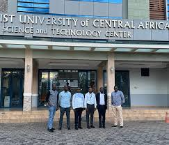

| HOME | APPLICATION | STUDENTS | MARKS | ACADEMICS |
 |
About AucaThe adventist University of Central Africa (AUCA) known as MUDENDE is a Seventh- day adventist Institutioon of Higher Learning which has a philosophy to operate on the basis of the Seventh-day adventist world view. "God is the Creator and Sustainer of the universe and source of true knowldge AUCA: A Modern-Day Calling, Rooted in Israel's MissionFrom the very beginning, God called Israel to be a light to the nations--a people set apart to reveal His character, uphold His truth, and serve as a blessing to the world . adventist University of Central Africa (AUCA)carries that same divine calling today. |
Description of IT FacultyThe Faculty of Information Technology is the unique Faculty into the school of Science at AUCA , whicg is comprised of several Engineering and Science Departments The program are designed to provide Hands-on skills training and they focus on technology of design, construction, implementation, and maintenance of the hardware and the Software components of modern systems and computer controlled equipment. Departmentsin AUCA
|
CALCULATE STUDENTS MARKS:
|
ADVENTIST UNIVERSITY OF CENTRAL AFRICAThe adventist University of Central Africa is pleased to anounce the March, 2025 Intake for undergraduate and master's programmes, at all of it's campuses (Masoro, Gishushu, and Ngoma Nursing campus) Professional courses:Certified Ethical Hacker (CEH), Postgraduate Diploma in Teaching Methodology, Diploma in Theology, Certified Ethical Hacker, Cisco Certified Network Associate, Certified Public Accountants (CPAs) Coaching, Early Childhood Education, English Language Proficiency, Research and Statistics, Statistical Package for Social Studies (SPSS). |